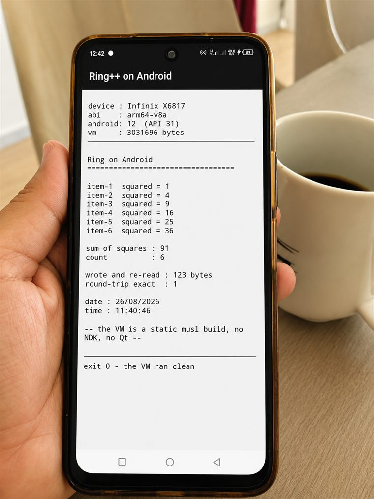

Ring already writes bytecode with no C compiler involved — Ring++ found that mechanism unused and built a CLI around it. What comes out is a small pair of files, not a promise wearing a bigger word than it earns.
Package it, copy the two files to an empty directory with nothing else present, run it:
$ ringpp build hello.ring --out dist built dist hello.exe hello.ringo run with: hello.exe hello.ringo
That is the whole artefact. No installer, no ring.dll,
no Ring install on the target machine at all — verified in this project's own gate
by copying exactly those two files to a clean directory and running them there.
This is the part Zig makes possible. --target names
where the program will run; it says nothing about where you're
building it. All five combinations work from a single machine:
Windows x64
Linux x64, static musl — one file, any distro
Linux arm64, static musl
macOS Intel
macOS Apple Silicon
$ ringpp build service.ring --target linux-x64 --out dist-linux built dist-linux service service.ringo run with: service service.ringo
Built on a Windows machine, targeting Linux, with no Linux anywhere in sight during the build. Not taken on faith: copied to a clean Ubuntu machine and run there, output byte-identical to running the source directly on Windows. Package once per target you ship to; nobody on the team needs a second machine, a VM, or a container to produce any of the five.
ringpp deps names every native library a program can
reach before you package anything — statically, without running it:
$ ringpp deps lib.ring --ring D:\ring127
lib.ring
load closure : 40 file(s) reached
Native libraries reachable from this program — these do NOT travel
inside a .ringo and must exist on the target machine:
windows macos linux declared in
ring_odbc.dll libring_odbc.dylib libring_odbc.so odbclib.ring:2
ring_mysql.dll libring_mysql.dylib libring_mysql.so mysqllib.ring:2
ring_sqlite.dll libring_sqlite.dylib libring_sqlite.so sqlitelib.ring:2
ring_internet.dll libring_internet.dylib libring_internet.so internetlib.ring:2
ring_openssl.dll libring_openssl.dylib libring_openssl.so openssllib.ring:2
ring_pgsql.dll libring_pgsql.dylib libring_pgsql.so postgresqllib.ring:2
Point ringpp build at a real install and it bundles
what it can find — never silently. A library it cannot find is named
MISSING in the manifest; the package still works, and says exactly
what it is missing.
A program reaching Ring's Qt bridge (ringqt) names
exactly one library by static analysis. Bundling only that one produced a
manifest with no MISSING line — every static measure said the package
was complete.
Copied to an isolated directory and run: no output at all. Windows exit
code 0xC0000409 — worse than a printed error, because it looks
complete right up until it silently is not.
$ ringpp build gui.ring --lib-dir D:\ring127\bin ringpp build: this program reaches Ring's Qt bridge (ringqt), which Ring++ does not package — see DESIGN_BUILD.md sections 3 and 6. `ringpp deps` explains why bundling it would be unsafe.
ringqt.dll itself links roughly 75 further Qt
libraries at the operating system's own loader level — a dependency no amount of
scanning Ring's source can see, because Ring's source never names them. Now
refused before a single byte is written, on both ringpp deps and
ringpp build.
Two reasons, and the first came before the second was ever
measured. Qt is dual-licensed — free under LGPL terms with real obligations
for how a commercial product links and redistributes it, or a paid commercial
licence otherwise. For software shipped to customers, that is a real business
risk, decided against before Ring++ existed. The crash above is the technical
reason underneath the business one: Ring reaches native code through a
scattered shelf of extensions — one ring_*.dll per capability,
each with its own build, its own transitive dependencies, none of it tracked
in one place. The Qt refusal is one instance of a wider, deliberate stance:
Softanza's own Ring foundations aim to depend on nothing beyond what they
vendor and support themselves.
Softanza is not standing still on that either. Its own engine
program — a separate effort from Ring++, in its own repository — has spent five
milestones replacing exactly this shelf: uuid.ring,
fastpro.ring, html.ring, libcurl.ring and
libuv.ring are gone from Softanza's own base library, each closed out
with a Zig-native module in their place.
Ring++ does not ship that engine — it is Softanza's own project, further along a road Ring++'s own measurement (the Qt crash above) confirms is the right one to be on. Two independent efforts, the same direction: fewer scattered native dependencies, not more.
Run ring yourfile.ring -go on stock Ring, today,
and it writes yourfile.ringo — a compiled form of your program.
Run ring yourfile.ringo, and it just runs, no compiler involved
at any point. This has always been true; it's how Ring itself starts up
fast. Ring's own packaging tool, ring2exe, takes a different
route from there — it writes a C file and hands it to Visual C++, GCC or
Clang. ringpp build takes the other fork: it keeps the
bytecode Ring already writes, and attaches a small prebuilt copy of Ring
itself that knows how to run it. Nothing new was invented. Two doors were
already open in Ring's own design; this project just walked through the
second one. The fuller design story is its own
page, alongside the other two doors and the contract that keeps this
working as Ring evolves.

One command builds that:
ringpp build app.ring --target android, and out comes a signed,
installable .apk. No NDK, no Qt, no Qt Creator, no Gradle, no
JNI, no C compiler. The Ring runtime inside the app is byte-identical
to the one the Linux build ships — it isn't a port, it's the same file.
Android is the one target that does ask something of you: an Android SDK and a JDK, because only Google's own tool writes the manifest format Android reads. That is said plainly here because the command says it plainly too — without them it tells you which one is missing and stops, rather than handing you an app that installs and then dies.
Ring has three, and they answer different questions rather
than competing. Ring2EXE ships with Ring and is the only one that
reaches the browser, and it reaches mobile the Qt way, by preparing a Qt
project for you to open in Qt Creator.
Ring2EXE++, Youssef Saeed's extended tool, is by far
the strongest at distribution — ten installer formats, from
.deb to MSI, plus auto-detection and presets. Nothing here
approaches that. ringpp build is the only one that
needs no C compiler on any machine and cross-builds five platforms from
whichever one you are sitting at — and the only one that reaches Android
without Qt.
The full comparison — read from each tool's own source, with the mobile and WebAssembly situation measured rather than asserted, and a map of which sibling project covers which target so nobody duplicates work — is BUILD-OPTIONS.md.